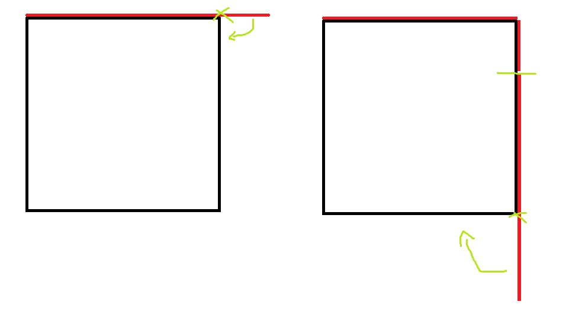

The 3rd Ucup Stage 5 赛后小结
比赛链接 ：https://qoj.ac/contest/1741
开局队长秒了 M ，Imakf 秒了 A 。
然后队长秒了 I ，我秒了 F ，然后和队友交流 B ，但这时比较幽默的事情发生了，我以为交换 $x,y$ 是位置，但没想到是数值，应该问清楚的，难怪当时完全没听懂队友做法。
在过完这个题目后，和队友交流 K ，我说了一个 dp 状态，$dp[x][j]$ 表示在 $x$ 往上走 $j$ 条边的最大收益，但是实际我在想另外一个做法，然后 Imakf 和队长说这个玩意完全可以启发式合并，然后我就没再细想了，Imakf 上机写启发式合并。
这里我直接放弃我那个想法有问题吗？我觉得没问题，首先我没想明白，想明白花的时间 + 写的时间不一定小于队友直接上启发式合并，其次我这个搞法好不好写还说不一定呢（复盘发现确实难写，还要写个数据结构维护），而且甚至不一定可行，启发式合并是三人公认可行，所以稳健的搞法是直接上启发式合并，为什么我不上，我只能说我当时确实没想明白，因为一开始就没往启发式合并的角度想。
此时一小时过去了。
能启发式合并的原因是：$dp[x]$ 的有用的 $j$ 和其子树内的车厢个数有关，所以可以启发式合并。
然后 Imakf 接下来写了一段时间的 K ，这玩意我脑补了一下确实难写。
然后是 E ，和队长讨论情况，讨论到最后，队长很果断地上了，坚信这就是所有情况，但我没有一个确切地证明，所以不敢肯定是不是对的，队长送了过了，这里队长的决策是对的，队长伟大，无需多言。原因是证明花的时间很长，而队长已经写了个搜，在搜基础可以很快的加上我们当前已经讨论的所有情况，送一发过了血赚，没过 20 min 没亏到哪去，更何况队长的讨论一般不会漏情况，所以这确实是正确的抉择，只能说打 ACM 不需要证明了。
然后我先和队长讨论了一下 G ，搞了个泰勒展开，但精度不够，突然队长灵机一动，既然泰勒展开的精度在零点附近很高，那么能不能通过某种手段把 $x$ 压到零点附近，很有道理，怎么压呢？快速幂，注意到 $e^{x}=(e^{\frac{x}{2}})^2$ ，然后就可以压到 $\frac{x}{2^{k}}$ 了。（说起来也搞笑，快速幂是队长说了个搞法，我听错成快速幂了，结果发现快速幂很对，只能说沟通不畅有时候可以产生想法了）
然后队长上机写 G ，但是精度仍然不够，我对这种题没啥想法，去搞 C ，后面 Imakf AC 了 K ，和队长合理搞 G ，后面发现先泰勒展开两项再快速幂，调调参过了，队长说这种题以后要早点写 check 。
此时两小时过去了（指 Imakf AC K）
期间我在写 C ，写之前和 Imakf 交流了一下，发现只有 log 个不同的宽要关心，所以可以 $O(nm\log)$ 实现此题，感觉这题并不困难，留到后面纯属唐了。
但是越是开香槟，似地越惨，C 有个细节不对，此时三小时过去了，下机搞了半小时，再上机过了。
剩下一个半小时，队长看出 L 做法，差分约束，上机，我去想 D 。
最后剩半个小时，我上机 D ，过了，全队 try L ，被卡时，拼尽全力，期间尝试各种卡时技巧，不乏唐氏钢棍说 Bellman-Ford 改 SPFA 能快很多的唐氏言论（主要我对最短路不是很了解，当时还唐了，以为一个负环 SPFA 只用跑一遍），最后 Imakf 不知用了何种力量，以 2971ms 惊险 AC 。
最后 11 题结束比赛。
最大的问题：B 应该问清楚题意的，毕竟当时队友不是描述交换 $a[x],a[y]$ ，而是用了另外一种描述，这种异于平常的描述应该问清楚的，不然也不会跨服交流了。
接下来是部分的题解：
M
最终答案一定是每个数字有个系数，考虑最大的 $k$ 个数字（如果有相同的数字则给他们贴上一个不影响数值的第二关键字，使得比较不存在等于号），其系数和一定 $\ge k-1$ ，原因是考虑只关心有关这 $k$ 个数字的合并，每次合并一定会使得其中至少一个数字的系数 $+1$ ，证毕。
所以答案下界是除最大值以外的数字和，而这显然可以构造，每次拿最大的数字和相邻数字合并即可。
时间复杂度：$O(n\log{n})$
PS：严格来说，这里的第二关键字可以是先把数组排序后的排名，两个集合比较如果和相同比较最小的排名是多少，由于所有数字排名不同，所以不存在等于号（两个集合交集为 $\empty$）。
A
注意到只有两个坐标都相同的点会有多的贡献。
F
一个比较简单的区间 dp ，注意到区间长度相同的时候，同层的更新是个最短路，用 Dijkstra 即可。
时间复杂度：$O(n^3)$
B
注意到最后排序前只关心每个数字在左还是在右，在最后一次排序后的操作模拟即可。
E
注：后面的木板既有可能指没切的木板，也有可能指切了的木板，请根据语境自行甄别。
一个关键的观察：最终搞法可能是每个木板都切了一刀，然后拼起来，不一定只有边角料部分切了。
不妨假设 $h\le w$ 。
注意到 $h+w\ge 2s$ 的时候答案一定为 $\left\lceil\frac{2h+2w}{s}\right\rceil$ ，因为可以在两个 $h$ 处不断放木板，超出部分切掉放在同一个 $s$ ，然后从放了木板的 $s$ 出发，不断放木板，超出切了放另外一边，然后接着放直到超出，就是这个结果，而且显然这是下界。
然后队长声称剩下的情况只有两种可能的放置方案：
- 四条边按照某个顺序依次放置，超出部分尝试裁了放到下一条边里面。
- 两条短边超出部分放到一条长边里。
然后就过了，不懂，说的道理。
现在来讨论一下为啥是对的，先证明一个引理：
如果一边用了两个木板 $a,b$ ，且 $a+b\le s$ ，那么存在一种不劣的方案把这两个木板合为一体。
证明就是讨论一下，如果 $s-a,s-b$ 的两个木板都扔了，这个显然正确，不妨认为 $s-a$ 没扔，则我们设置一块 $s-(a+b)$ 的木板放在 $s-a$ ，然后剩余的部分有 $b,s-b$ ，所以仍然是对的。
这个引理有个妙用，如果我们已经确定了若干块木板的拜访，现在有一边的长度 $\le s$ ，我们就可以直接用一个木板放置，而接下来的讨论，就是根据这个这个木板放置后，其另外一块木板放在哪里展开的，不断讨论剩余木板的传递性，下面是一个图片展示：

依据这个引理，我们展开讨论，显然，答案为 $2$ 等价于 $h+w=s$ ，而且这个方案可以由上面的方案 $1$ 生成，严谨的证明考虑木板切开只有 $4$ 块，因此一定有两边加起来等于 $s$ ，讨论一下即可。
而我们要讨论 $h+w<2s$ 的情况，显然答案只能是 $3/4$ ，而 $4$ 的方案显然也一定能由方案 $1$ 生成，所以现在讨论能不能是 $3$ ，相对应的方案能否用上面两个方案生成。
答案为 $3$ 的必要条件是 $h+w\le 1.5s,h+w≠s$ 。
因此考虑每次枚举一条边，放置一块木板并讨论另一块木板放在哪的传递链：$h-w,h-w-w$ （起点一定是 $h$ ，因为 $h<s$ ），都能保证下一条边在放置了上一条边剩余的木板时剩余长度 $\le s$ 。
所以考虑讨论的过程，可以公式化成以下过程：
- 如果只剩下长边 $w$，如果 $w\le s$ ，则仍然用引理讨论传递剩下木板，如果 $w>s$ ，则显然答案为 $\left\lceil \frac{2w}{s} \right\rceil$ ，显然也可以用传递木板的方式生成，即第一种方案生成。
- 如果有短边，从短边出发，依次传递木板，直到放不下扔掉为止，或者主动扔掉。
注意到，如果把 “ 主动扔掉 ” 的选择去掉，上述过程就是方案 $1$ 的子集，但是怎么证明如果空间够一定不会主动扔掉木板呢？
我们不妨给四条边编号 $1,2,3,4$ ，怎样编无所谓，后面不区分长短边了，假设存在 $3$ 块木板的方案。
如果每个边只有一块木板，那么恰好有两条边共享一块大木板，不妨认为 $1,2$ ，则按照 $1,2,3,4$ 的顺序一定可以跑出 $3$ 。
由于只有三块大木板，如果要丢掉一块木板，则在场上至多五块木板，所以剩余情况为恰好有一边有两块木板，不妨认为是 $1$ 边，如果 $2,3,4$ 中不共享一块木板，不妨认为 $1$ 和 $2,3$ 分别共享木板，则 $2,1,3,4$ 可以跑出 $3$ 。
如果共享，不妨设 $2,3$ 共享，则 $2,3,4,1$ 可以跑出 $3$ ，综上，只要存在 $3$ 块的方案，就一定可以用方案 $1$ 跑出来答案，证毕。
所以甚至第二种方案是多余的，只在证明 $h+w\ge 2s$ 的时候用到了这个方案，去掉后提交也 AC 了，至此，讨论结束，做毕。
有一说一，讨论起来确实麻烦，当然也有可能是我讨论烦了，这玩意要是再赛时讨论就炸了，直接送确实是明智之举，队长伟大，无需多言。
K
我其实不知道队友具体实现，大概意思是：$dp[x][j]$ 表示 $x$ 往上霸占 $j$ 条边的最大收益，当然 $j$ 也可以是霸占到深度 $j$ ，这样不用数组偏移，然后 $j$ 的个数只与子树内车厢数量有关，因此可以启发式合并。
队友写的树上启发式合并，显然只用记录 $O(\log)$ 个数组，这样空间就能有保障了。
至于我那个搞法，我就只编所有边长为 $1$ 的情况好了，注意到可以设 $dp[x]$ 表示 $x$ 到父亲这条边被占据的最大收益，然后按照从深往浅的顺序 dp ，每次可以把能到这个深度的列车往上扩一节，时间复杂度：$O(n\log{n})$ ，边长为 $1$ 是好写的，但是不是就难写了，因为要用数据结构维护 $dp[x]$ ，原因是列车往上扩可能直接扩一条链，要维护一条链的增量，而启发式合并一层一层跳，然后全局加减，所以没有这个问题。
本来想赛后自己实现实现的，还要写个数据结构，太难写了，弃了，我人麻了。
C
观察到最终答案一定是由一个矩形扩展出来的，原因是：可以注意到翻转后的最大面积黑矩形一定是由翻转前的某个黑矩形翻转得到的，溯源即可证明。
问题转变为，现在全是白色的纸上恰好只有一个矩形，如何求其的最小答案？
注意到可以关心最长有黑色的行的连续段和最长有黑色的列的连续段，和上面的证明过程一样，同时如果对称轴平行于行/列，那么只会增长行/列的最长连续段，可以得到下界是将上述两个变量全部变成对应的最大值的操作次数，而且显然这就是答案。
稍稍解释一下，假设矩形是 $[2,3]*[1,4]$ ，那么初始有黑色的行是 $[2,3]$ ，最长的有黑色的行的连续段是 $[2,3]$ ，而后面每次操作后的最长连续段一定是操作前的某个连续段翻转生成，例如如果翻转后为 $[2,5]$ ，那么一定是 $[2,3]$ 沿着 $3,4$ 行中间那条线翻转后生成的 $2,5$ ，而最终这个连续段是 $[1,n]$ ，溯源回去即可得到结论。
所以问题变成行列独立的问题，注意到每一维的答案量级为 $O(\log)$ ，所以钦定右下角，然后关心行的每一个答案所需要的最小行，用其找到最长的列，然后求列的答案即可，时间复杂度：$O(nm\log{n})$ 。
但还有个问题，就是怎么求答案，其实是这么个问题：
一段序列由 $x$ 个白色， $b$ 个黑色， $y$ 个白色依次构成，问最小翻转次数（ $x\le y,y≠0$ ）。
注意到一个下界是 ：$\log_2{(\left\lceil \frac{x}{b} \right\rceil+\left\lceil \frac{y}{b} \right\rceil)}$ ，而且这个下界 $+1$ 是一定能够成功的。
所以问题是什么时候能达到这个下界，不妨考虑在希望能够达到下界的条件下的可能的最优策略，注意到只有两种可能最优策略（考虑 $i$ 次操作后黑色区间长度和 $2^{i}*b$ 差值即可，这个证明在此不再赘述）：
不妨设 $2^{k}\le \left\lceil \frac{x}{b} \right\rceil<2^{k+1}$
- 当 $\left\lceil \frac{x}{b} \right\rceil$ 二进制从小到大第 $i$ 位是 $1$ 时，就在第 $i$ 次往左翻，否则往右翻。
- 选择某一次 $i>k$ 的时间往左翻，其余向右翻。
一个明显的直觉是，第一种策略优于第二种策略，现在证明之。
在第 $k+1$ 次操作中，选择了向左翻，此时黑色长度为 ：$b2^{k+1}-r$ ，其中 $r=\left\lceil \frac{x}{b} \right\rceilb-x$ ，所以往右翻后续的长度为 ：$b2^{i}-r2^{i-(k+1)}$ 。
而第二种，在第 $i$ 次操作后，为 $b*2^{i-1}+x$ ，两者相减可以得到：
$b2^{i-1}-r2^{i-(k+1)}-x>b*(2^{i-1}-2^{i-(k+1)}-2^{k+1})$ ，如果 $k\ge 1$ 这显然 $\ge 0$ ，如果 $k=0$ ，则 $x+r=b$ ，显然也 $\ge 0$ ，所以就是第一种策略更优，所以直接用第一种策略判断一下是不是下界就行了。
1 |
|
G
不知道队友怎么搞过去的，反正大概思路是泰勒展开两项 $e^{\frac{x}{2^{20}}}$ （到平方项），然后快速幂到 $e^{x}$ 。
听队友说道理是每次快速幂的相对误差会翻倍，但是离原点距离除 $2$ （$(1+\Delta)^2=1+2\Delta$ ，二阶小项忽略不计），两者权衡一下，可以得到最小误差是在泰勒展开两项的时候取得。（怎么得到这个结果的呢？如果我没猜错应该是试出来的，感觉不太能定量计算，而且队友确实在机上捣鼓了一段时间）
D
首先可以注意到，最大值点一定只在 $a_{i}$ 处取得，而且只需要知道 $b=10^{5}$ 的构造即可。
这个题目什么个搞法呢？
首先不妨假设相邻两项的最大值分别在下标 $i,i+t$ 处取得，列个式子。（这个列出来是不会亏的，因为任何情况式子都适用，我们并没有在前面假定什么最大值点都是相邻的之类的东西）
则有 ：$a_{i}(n-i+1)+\sum\limits_{k=i}^{i+t-1}a_{k}=a_{i+t}(n-i-t+1)$
整理一下可以得到：$(a_{i+t}-a_{i})(n-i+1)-t(a_{i}+a_{i+t}-a_{i})=\sum\limits_{k=i}^{i+t-1}a_{k}$
再整理一下可以得到：$(a_{i+t}-a_{i})(n-i-t+1)=t*a_{i}+\sum\limits_{k=i}^{i+t-1}a_{k}$
$(a_{i+t}-a_{i})=\frac{t*a_{i}+\sum\limits_{k=i}^{i+t-1}a_{k}}{(n-i-t+1)}$
这个时候，敏锐的察觉到一种可能的答案模式，每隔一个小间隔得到一个最大值点，中间不是最大值点的 $a_{k}$ 只有很小的不会影响最大值的增幅，来让右边这个式子是整除的，所以可以认为上面基本是 $2t*a_{i}$ 量级的，而下面只要在最后一个最大值来临之后，$n-i+1$ 足够大，我们就可以认为分母也是足够量级的。
来尝试一手，不妨认为 $t=2$ （因为只要有 $a_{i+1}$ 就足够调整余数了，不够 $t$ 再变大）
为了让分母量级固定，不妨让 $n=5*10^5$ ，直接拉满
注意到调整余数会让 $a_{i+1}$ 增加不超过 $n$ 的增幅，为了让这个增幅不会成为最大值，我们需要让 $\frac{2a_{i}}{n-i}$ （也就是 $t=1$ 的增幅）大于 $n$ ，所以不妨让 $a_{1}>\frac{n^2}{2}$ 。因此我选择了 $2*10^{11}$ 。
同时为了让 $a_{i+2}>a_{i+1}$ ，同样需要让 $\frac{4a_{i}}{n-i-1}$ 大于 $n$ ，这显然被上面的要求包含，所以不用管。
在得到 $10^5$ 的最大值点后，贪心的，显然只要让后面的增量固定为 $1$ 就行了。
现在只有这么两个问题：
- 后面增量为 $1$ 的部分有没有可能成为最值。
- 数字是否都在值域里。
第一个问题非常的简单，从最后一个最值出发，有：$\frac{2ta_{i}}{n-i-t+1}$ 远大于 $n$ ，所以不会，而且从这个式子不难看出，越到后面，分子越大，分母越小，显然成为最大值的增量是总体上升的，前面的增量都大于 $n$ ，后面就不可能只有 $n$ 了，所以第一个问题不需要担心。
第二个问题显然跑一下就行了，当然也可以大概的估计一下，分母 $\le 310^5$ ，则相邻两项增量至多为 $\frac{2a_{i}}{310^{5}}+1$ ，不妨认为前面的数字都 $\le 710^{11}$ ，则有增量为 $\le 10^{5}(\frac{1410^{11}}{310^{5}} + 1)\le 4.910^{11}+10^{5}\le 510^{11}$ ，加上初始值，就似乎 $\le 7*10^{11}$ ，后面增量为 $1$ ，显然不会爆，证毕。
然后就做完了。
1 |
|
L
非常牛的题，当时看到 $2*10^3$ 的数据范围，以为是找个结论然后 $dp$ ，鉴定为 ATcoder 做多了。
但是队长差分约束大师，一语道破天机，你说有没有可能是二分然后差分约束，最后找个离他最近的分数转成模意义下的答案，但这依赖于分母要是 $O(m)$ 量级的。
然后队长就上机了，后面 Imakf 证明了分母是 $O(m)$ 量级的，相当于直接把图建出来后，每个环有多少正边和负边，然后答案就是使得没有环是负环的最大值，显然这时一定有环是零环，所以分母一定是点数量级的，也就是至多 $2m$ 的。
但是 $O(m^2\log{m})$ 卡时限卡出痛苦面具，最后不知道改了什么，最后一分钟一发入魂 2971 ms AC ，Imakf 伟大，无需多言。
队长名言：看到比例就应该想到分数规划，然后就应该想到差分约束啊。
队长伟大，无需多言。